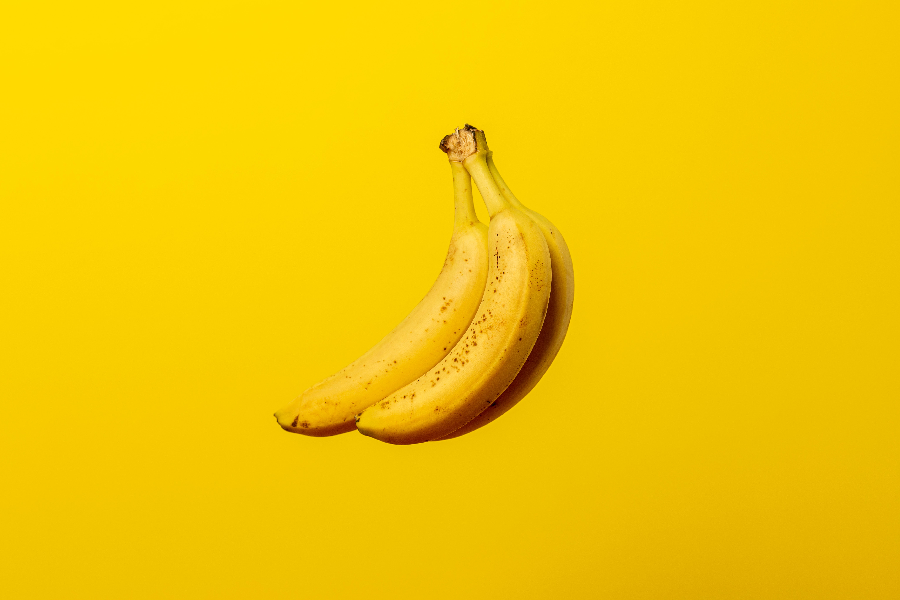

Bananas are not particularly my favorite fruit.Here are some banana facts; the more potassium a banana gets the more sweet it is.(until they turn brown), bananas are naturally slightly radioactive
Apples are an okay fruit, theyre not bad. here are some apple facts; there are so many types of apples, about 2,500 types. apples take 4-5 years to start producing apples.

Strawberries can be sweet one day or sour, thats why i like them.here are some Strawberry facts; on average, a strawberry has 200 seeds, they are the only commonly known fruit with seeds on the outside.
oranges are almost my favorite, they are almost always good to eat.Here are some orange facts; oranges are a citrus fruit and the argument of which came first(the color or the fruit), the correct answer is surperisingly the fruit.

My most favorite is Watermelon. The seeds get in the way sometimes but its still my favorite. Here are some watermelon facts; They are actually a berry, and they are in the same family as cucumbers and squashes.